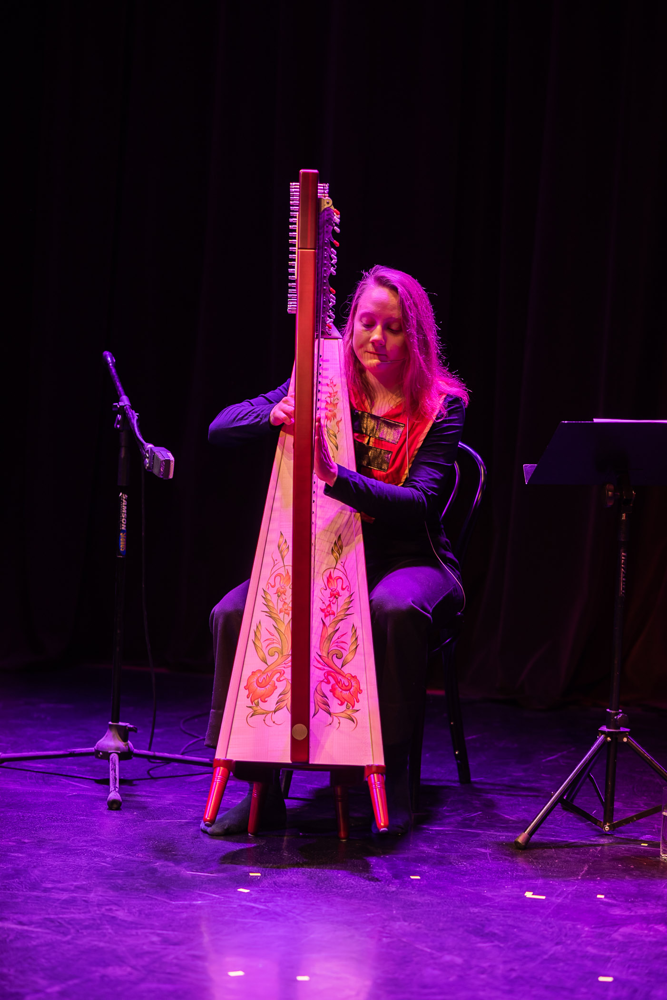
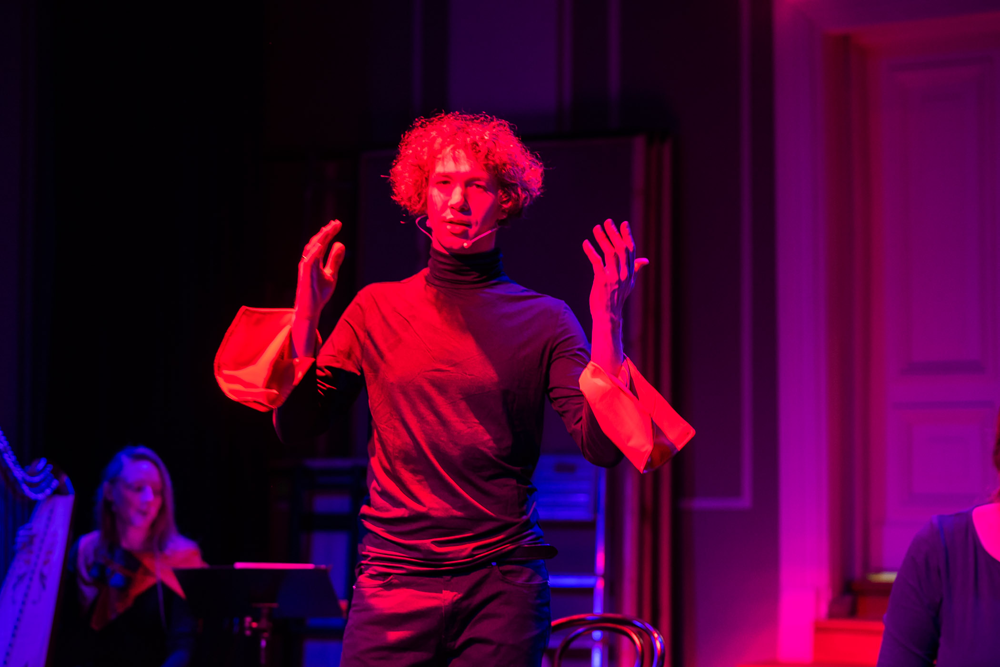
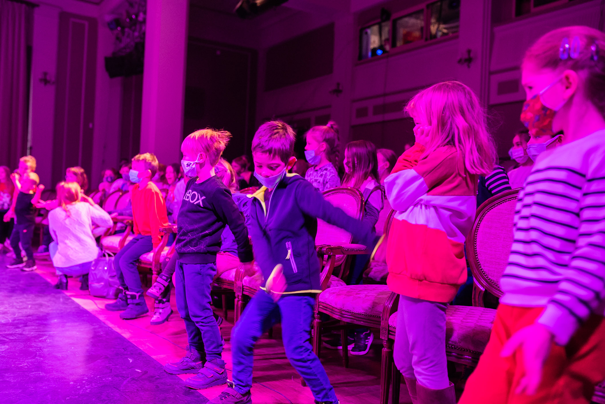
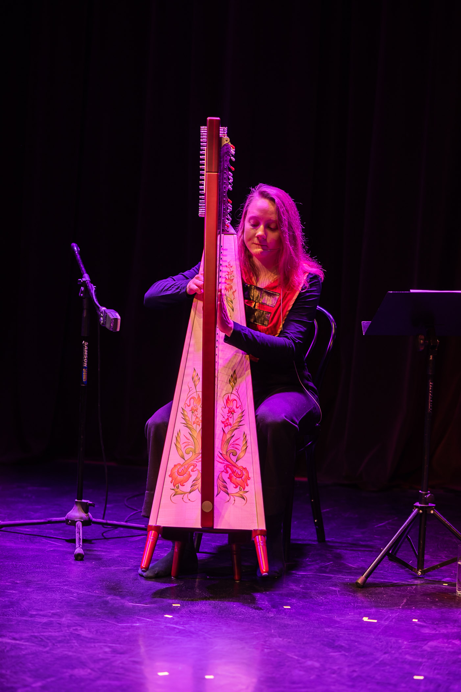
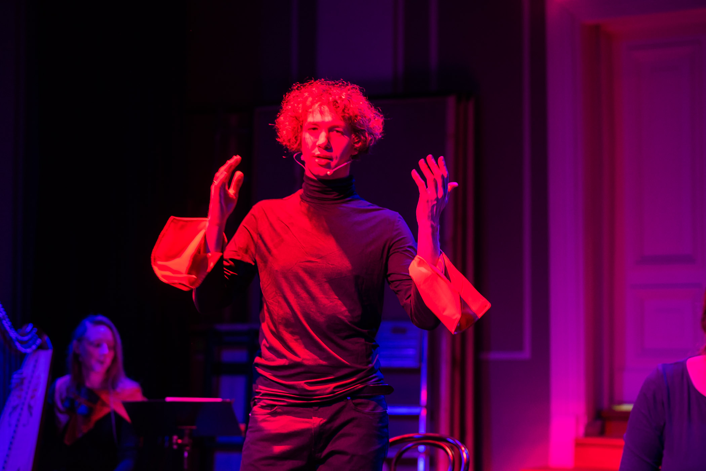
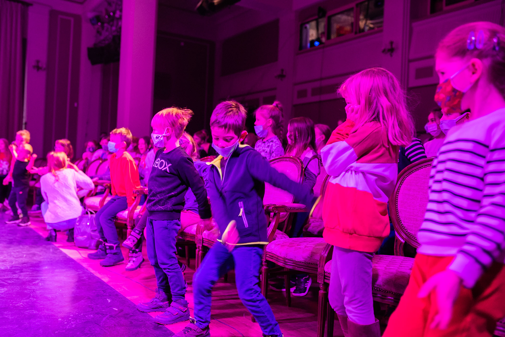
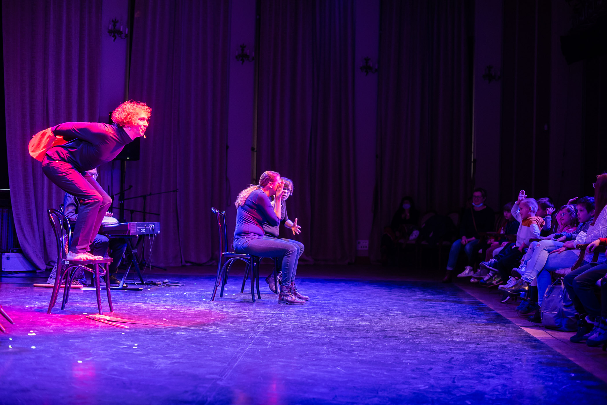
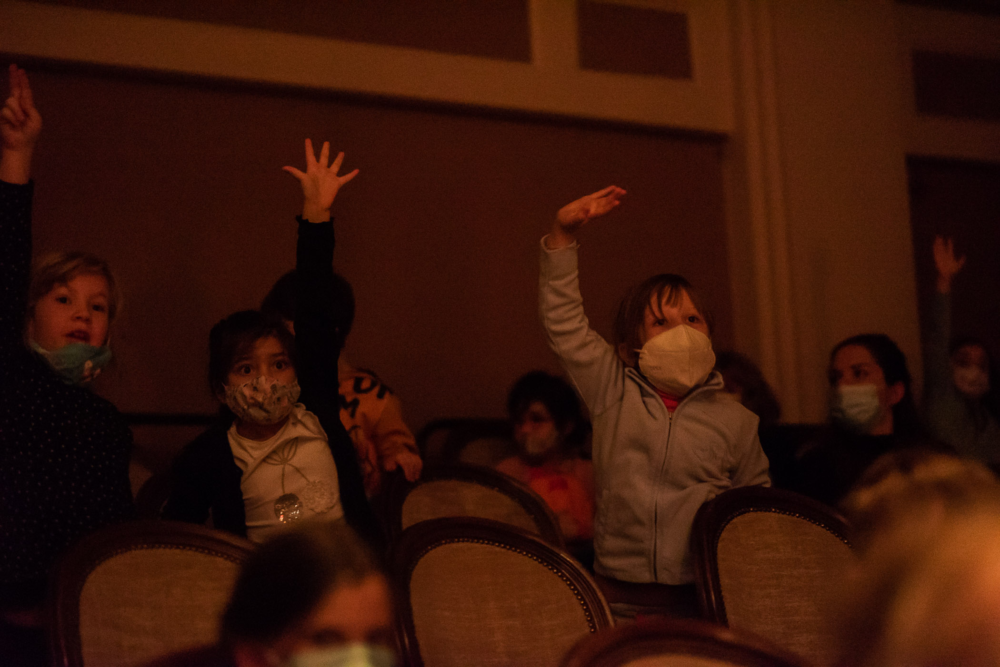
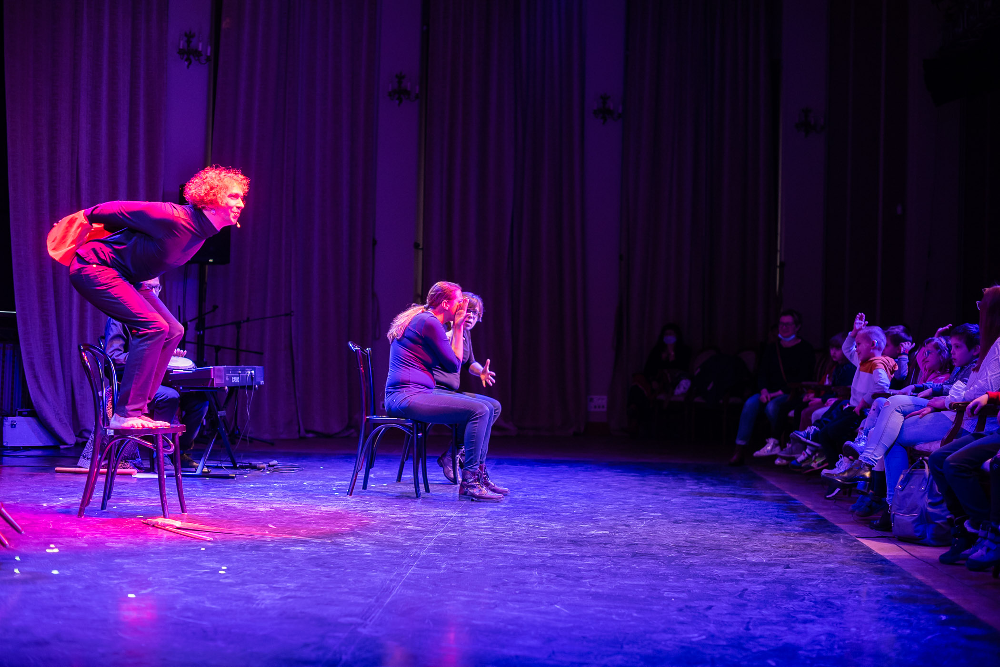
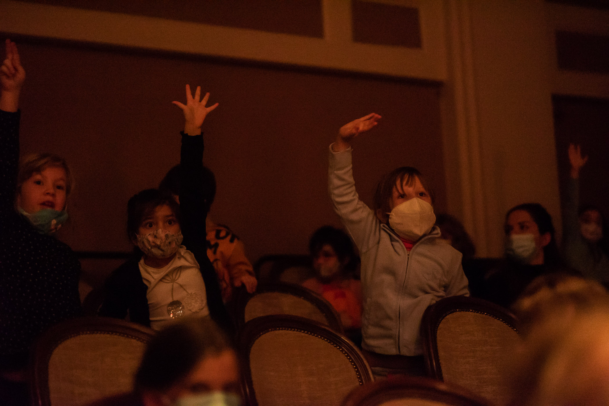

O pierwszych dźwiękach
wiek
6 - 10 lat
czas trwania
1 godz.
data premiery
19.11.2021
Opis spektaklu:
Edgar uwielbia śpiewać. Niestety nie do końca mu to wychodzi - fałszuje. Właśnie dlatego mieszkańcy miasteczka ciągle uciszają Edgara "Ciiii! Ciii! Ciii!". Czy można się czegoś nauczyć, kiedy ktoś nas ciągle ucisza?
Pewnego dnia Edgar wyrusza w daleki świat. Na swojej drodze spotyka Muzykę - kobietę w gwieździstej sukni i czerwonym płaszczu. Czy Muzyka pomoże Edgarowi nauczyć się śpiewać i grać? Jakie historie mu opowie?
Spektakl narracyjny O pierwszych dźwiękach - to opowieść snuta w ciągłej interakcji z dziećmi. Wypełniona wspólnym śpiewem, dźwiękami harfy, pianina i innych instrumentów. Ramową historię Edgara przeplatają wątki mitologiczne o początkach muzyki - opowieść z fińskiej Kalevali o powstaniu pierwszego kantele, o stworzeniu lutni przez małego Hermesa, czy o pojedynku muzycznym Marsjasza z Apollem.
Jerzy Szufa - opowiadanie
Oktawia Bylicka, Krzysztof Ratajski - muzyka
Kwestie techniczne: spektakl świetnie nadaje się do wystawienia w warunkach scenicznych. W większej przestrzeni potrzebujemy nagłośnienia oraz lekkiego oświetlenia widowni.
Możliwość tłumaczenia na PJM.
 
 
